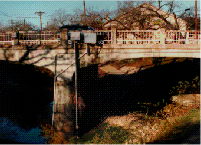
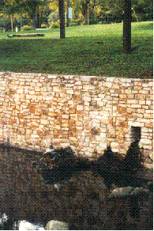
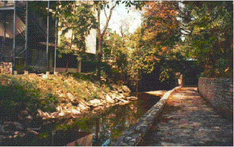
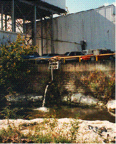
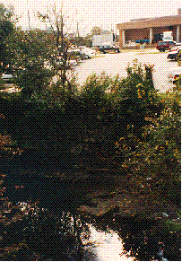
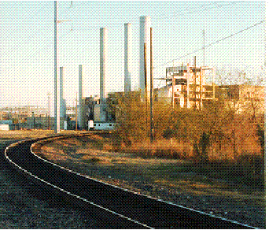

Encroachment of Human Settlements on the Natural Environment

The 12th Street bridge across Shoal Creek in Austin, Texas. The
bridge, as well as a hike and bike trail and drainage pipes, have altered
the natural flow of the creek in this densely developed area of town.

This section of the 1400 block of Waller Creek has been artfully
channelized. In this area the creek runs through Waterloo Park. Across
Red River Boulevard is Brackenridge Hospital and the state capitol complex
is just a few blocks away.

This section of lower Waller Creek has been substantially altered
by adjacent development: an office complex and a hike and bike trail.

This ice plant in central Austin is right on the bank of Waller
Creek. Some of the excess water from the plant can be seen draining into
the creek.

This is one of the parking lots and supply buildings of the state
capitol complex along Waller Creek. Once a residential neighborhood, this
entire area of central Austin has been transformed during the past twenty-five
years into a large collection of state office buildings. Along with the
office buildings have come numerous high-rise parking facilities and ground-level
lots. The runoff from the impermeable surfaces in these parking lots drains
directly in Waller Creek.

Rail lines just north of Cesar Chavez Boulevard turning south toward
the Town Lake Bridge. The Seaholm powerplant is in the distance. Although
no longer a primary generation facility for the City of Austin Electric
Department, the Seaholm plant was sited on the banks of Town Lake for cooling
water.
Created by Katrin Molch, October 1995. Last revised 21 January
1998. RRR.